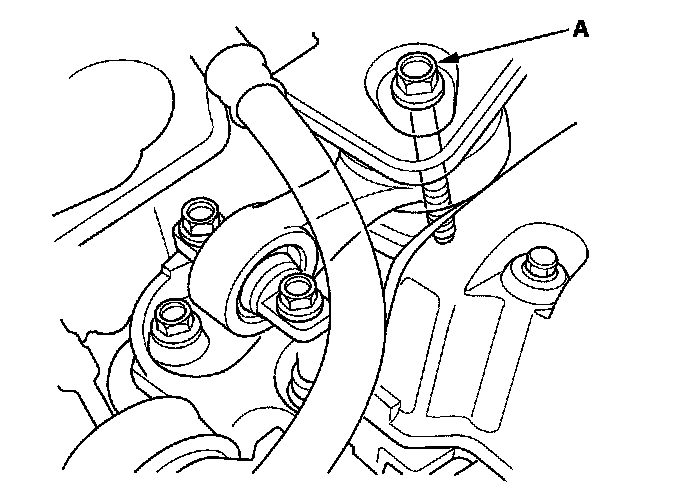
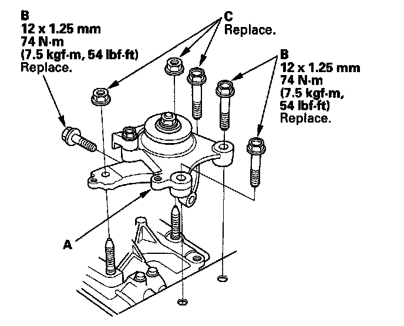
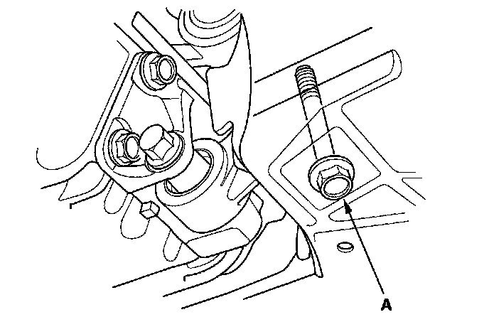
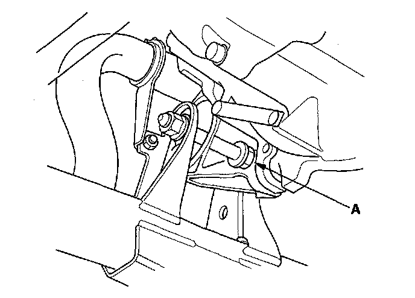
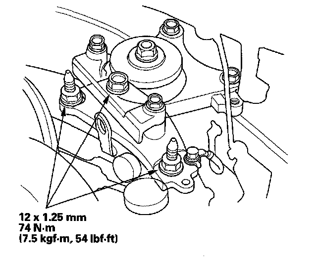
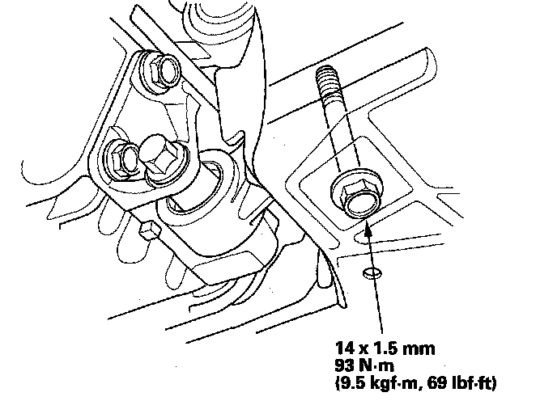
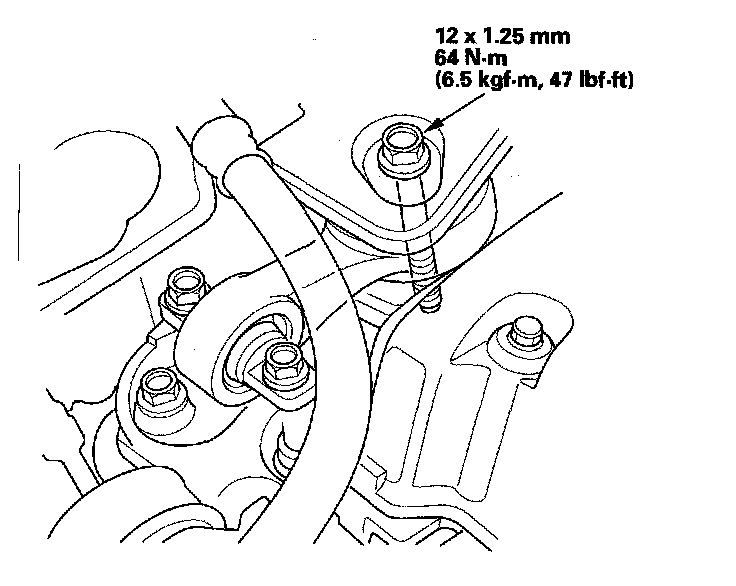
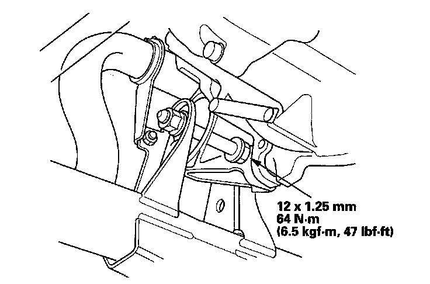

Transmission Mount: Service and Repair
Transmission Mount Replacement1. Loosen the upper torque rod mounting bolt (A).

2. Remove the air cleaner assembly.
3. Remove the engine control module (ECM) cover, then remove the three bolts securing the ECM.
4. Remove the ECM bracket.
5. Remove the under hood fuse/relay box from the bracket.
6. Support the transmission with a jack and wood block under the transmission.
7. Remove the transmission mount (A).

8. Install the transmission mount with the new mounting bolts (B).
9. Loosely tighten the new bolt and nuts (C).
10. Raise the vehicle on the lift to full height.
11. Remove the splash shield.
12. Loosen the lower torque rod mounting bolt (A).

13. Loosen the front mount mounting bolt (A).

14. Lower the vehicle on the lift.
15. Tighten the transmission mounting bolt and nuts.

16. Raise the vehicle on the lift to full height.
17. Tighten the lower torque rod mounting bolt.

18. Lower the vehicle on the lift.
19. Tighten the upper torque rod mounting bolt.

20. Install the under-hood fuse/relay box to the bracket.
21. Install the ECM bracket.
22. Install the ECM then install the ECM cover.
23. Install the air cleaner assembly.
24. Raise the vehicle on the lift to full height, and tighten the front mount mounting bolt.

25. Install the splash shield.